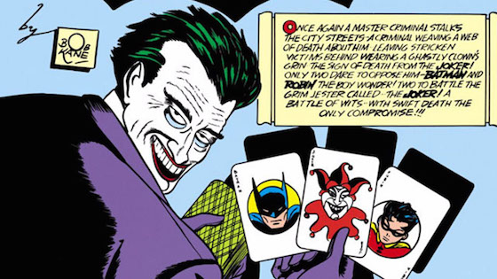

Der Horrorclown als popkulturelles Phänomen
Essay |
Der moderne Charakter des bösen Clowns wurde durch Stephen Kings Roman »Es« populär, der im Jahr 1986 veröffentlicht und 1990 unter dem Titel »Stephen Kings Es« verfilmt wurde.

Der Joker

Der Joker ist ein Meisterkrimineller, der ein Clown-ähnliches Erscheinungsbild besitzt: Er ist ein ca. 1,80 m großer, hagerer Mann mit einem kreideweißen Gesicht, schwarz umrahmten Augenlidern, grünen Haaren und blutroten Lippen, die zu einem teuflischen Grinsen verzogen sind. Er trägt zumeist einen violetten Anzug mit Schwalbenschwanz, gelegentlich auch einen violetten Hut oder Mantel. Am Anzug steckt des Öfteren eine Blume, die Säure verspritzen kann. Dazu hat er oft einen Stock mit Knauf, manchmal ist im Stock ein Degen versteckt. Gerne verwendet er auch PENG-Pistolen, welche in ihrer Funktion tödlich sind.